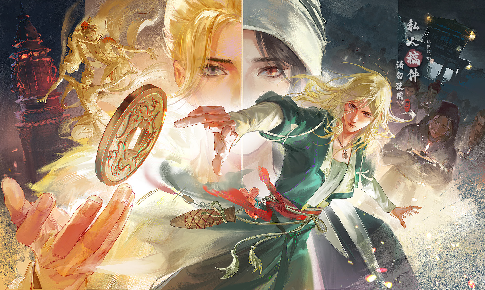

"可是大人，生而微末者，当真无声吗？"
"百姓之声，闻之者，有矣。"
从燕云开服至今，未央城打工人为温无缺写的辟谣帖已逾三万字，已经能够凑成一个合集，然而某些人对温无缺的选择性执法以及恶意的抹黑造谣却仍未停止，鉴于此，我们专为温无缺做了这个辟谣站点。
我们并不指望这场猎巫会因此有所改变，毕竟装睡的人永远喊不醒，只是希望未来在旁人搜索温无缺或者东阙公子时，不是满屏的莫须有罪名，而是真的能够了解到这个丰满、值得深挖的角色。本站的存在意义，是希望能让刷到过温无缺相关洗脑包或谣言的朋友们可以了解一下事情的真相以及开封生金瓯事件的全貌。
实际上，每个人喜欢什么样的纸片人都是自己的自由，温无缺是一个底色并非纯白的角色，本站的内容不会对温无缺在未央城时期所作的恶事进行任何洗白，因为错就是错，她自己也说自己过去被朱门的酒肉吃了泰半，清醒过来前，已经是半个禽兽。但是没做过就是没做过，人可以不喜欢一个角色，但是请不要造谣、抹黑、猎巫、围剿，将本不是她所作之事与所造之恶归结于她身上，被指出后仍旧胡搅蛮缠。
——基于客观事实，在960年以后的时间线里，温无缺无论在主观还是客观上，从未有过任何一件与群众利益相左的事情。她不应该遭受长达半年的、凭空捏造的、无中生有的谣言抹黑。实际上作为灰色角色，盈推从来没有要求过任何人对温无缺的所作所为进行全肯定，但是也不认可那些以科普或者讨论的名义夹枪带棒，谋求认同，故意撩架的行为。
因此，本站会针对涉及到温无缺相关谣言进行逐一辟谣。此外，哪怕你对该角色没有兴趣，但只要对燕云剧情感兴趣，本篇合集里涉及到的开封主线解析，或许也可以解答你因为碎片化叙事而导致的许多一知半解的问题。欢迎剧情讨论，友善的、理性的、合理的讨论。
本网站会作为辟谣集中地，并持续更新。
请曾经刷到过温无缺、盈盈、东阙公子谣言的老大们认真一看，顿首。
也请那些坚持不懈造谣温无缺的人，停止你们的围剿和造谣，猫只是在呼吸。